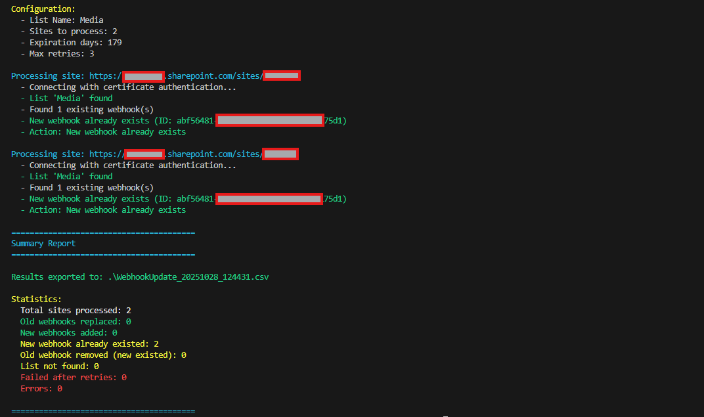

Maintain and Replace SharePoint List Webhook Subscriptions
Summary
This PowerShell script helps maintain and replace SharePoint list webhook subscriptions across multiple sites. It identifies existing webhook subscriptions, removes old webhook URLs, and replaces them with updated Power Automate webhook subscriptions. The script includes retry logic for reliability and exports detailed results to a CSV file.

The script provides a comprehensive solution for managing webhook subscriptions in SharePoint, ensuring that organizations can keep their integrations up to date and functioning smoothly.
<#
.SYNOPSIS
Maintain and replace SharePoint list webhook subscriptions across multiple sites.
.DESCRIPTION
This script checks SharePoint sites for a specific list, identifies existing webhook subscriptions,
removes old webhook URLs, and replaces them with updated Power Automate webhook subscriptions.
Features:
- Connects to multiple SharePoint sites
- Identifies and removes old webhook URLs
- Adds new webhook subscriptions with configurable expiration
- Implements retry logic for reliability
- Exports detailed results to CSV
- Provides comprehensive logging
.PARAMETER SiteUrls
Array of SharePoint site URLs to process. Can be provided directly or from a CSV file.
.PARAMETER ListName
Name of the SharePoint list to check for webhooks (default: "Documents")
.PARAMETER OldWebhookUrl
The old webhook URL that should be replaced (optional)
.PARAMETER NewWebhookUrl
The new webhook URL to add
.PARAMETER ClientId
Azure AD Application (Client) ID for authentication
.PARAMETER Tenant
Tenant name (e.g., contoso.onmicrosoft.com)
.PARAMETER Thumbprint
Certificate thumbprint for authentication (optional, if using certificate auth)
.PARAMETER ExpirationDays
Number of days until webhook expiration (default: 179, max: 180)
.PARAMETER MaxRetries
Maximum number of retry attempts for adding webhooks (default: 3)
.PARAMETER RetryDelaySeconds
Delay in seconds between retry attempts (default: 5)
.PARAMETER OutputPath
Path for the output CSV report (default: current directory)
.EXAMPLE
.\script.ps1 -SiteUrls @("https://contoso.sharepoint.com/sites/site1", "https://contoso.sharepoint.com/sites/site2") `
-ListName "Documents" `
-NewWebhookUrl "https://prod.westeurope.logic.azure.com:443/workflows/abc123/triggers/manual/paths/invoke..." `
-ClientId "12345678-1234-1234-1234-123456789abc" `
-Tenant "contoso.onmicrosoft.com" `
-Thumbprint "ABC123..."
.EXAMPLE
# Using interactive authentication
.\script.ps1 -SiteUrls @("https://contoso.sharepoint.com/sites/site1") `
-ListName "Media" `
-OldWebhookUrl "https://old-webhook-url.com/..." `
-NewWebhookUrl "https://new-webhook-url.com/..."
.NOTES
Author: Valeras Narbutas
GitHub: ValerasNarbutas
Requires: PnP PowerShell module
#>
[CmdletBinding()]
param(
[Parameter(Mandatory = $true, HelpMessage = "Array of SharePoint site URLs to process")]
[ValidateNotNullOrEmpty()]
[string[]]$SiteUrls,
[Parameter(Mandatory = $false, HelpMessage = "Name of the SharePoint list")]
[string]$ListName = "Documents",
[Parameter(Mandatory = $false, HelpMessage = "Old webhook URL to replace (optional)")]
[string]$OldWebhookUrl,
[Parameter(Mandatory = $true, HelpMessage = "New webhook URL to add")]
[ValidateNotNullOrEmpty()]
[string]$NewWebhookUrl,
[Parameter(Mandatory = $false, HelpMessage = "Azure AD Application (Client) ID")]
[string]$ClientId,
[Parameter(Mandatory = $false, HelpMessage = "Tenant name (e.g., contoso.onmicrosoft.com)")]
[string]$Tenant,
[Parameter(Mandatory = $false, HelpMessage = "Certificate thumbprint for authentication")]
[string]$Thumbprint,
[Parameter(Mandatory = $false, HelpMessage = "Number of days until webhook expiration")]
[ValidateRange(1, 180)]
[int]$ExpirationDays = 179,
[Parameter(Mandatory = $false, HelpMessage = "Maximum number of retry attempts")]
[ValidateRange(1, 10)]
[int]$MaxRetries = 3,
[Parameter(Mandatory = $false, HelpMessage = "Delay in seconds between retries")]
[ValidateRange(1, 60)]
[int]$RetryDelaySeconds = 5,
[Parameter(Mandatory = $false, HelpMessage = "Output path for CSV report")]
[string]$OutputPath = "."
)
# Initialize client state with timestamp
$clientState = "WebhookUpdate-" + (Get-Date -Format "yyyyMMdd-HHmmss")
# Initialize results array
$results = @()
Write-Host "========================================" -ForegroundColor Cyan
Write-Host "SharePoint Webhook Subscription Maintenance" -ForegroundColor Cyan
Write-Host "========================================" -ForegroundColor Cyan
Write-Host ""
Write-Host "Configuration:" -ForegroundColor Yellow
Write-Host " - List Name: $ListName" -ForegroundColor Gray
Write-Host " - Sites to process: $($SiteUrls.Count)" -ForegroundColor Gray
Write-Host " - Expiration days: $ExpirationDays" -ForegroundColor Gray
Write-Host " - Max retries: $MaxRetries" -ForegroundColor Gray
Write-Host ""
# Process each site
foreach ($siteUrl in $SiteUrls) {
Write-Host "Processing site: $siteUrl" -ForegroundColor Cyan
try {
# Connect to site using appropriate authentication method
if ($ClientId -and $Tenant -and $Thumbprint) {
Write-Host " - Connecting with certificate authentication..." -ForegroundColor Gray
Connect-PnPOnline -Url $siteUrl -ClientId $ClientId -Tenant $Tenant -Thumbprint $Thumbprint
}
elseif ($ClientId -and $Tenant) {
Write-Host " - Connecting with interactive authentication..." -ForegroundColor Gray
Connect-PnPOnline -Url $siteUrl -ClientId $ClientId -Tenant $Tenant -Interactive
}
else {
Write-Host " - Connecting with interactive authentication..." -ForegroundColor Gray
Connect-PnPOnline -Url $siteUrl -Interactive
}
# Check if the specified list exists
$list = Get-PnPList -Identity $ListName -ErrorAction Stop
if ($null -ne $list) {
Write-Host " - List '$ListName' found" -ForegroundColor Green
# Get existing webhooks for the list
$webhooks = Get-PnPWebhookSubscriptions -List $ListName
# Initialize tracking variables
$oldWebhookFound = $false
$oldWebhookRemoved = $false
$newWebhookAdded = $false
$otherWebhooksCount = 0
$removedWebhookId = ""
$newWebhookId = ""
$newWebhookExpiration = ""
$newWebhookAlreadyExists = $false
$retryCount = 0
$webhookError = ""
if ($webhooks.Count -gt 0) {
Write-Host " - Found $($webhooks.Count) existing webhook(s)" -ForegroundColor Gray
# Check existing webhooks
foreach ($webhook in $webhooks) {
# Check for old webhook URL (if specified)
if ($OldWebhookUrl -and $webhook.NotificationUrl -eq $OldWebhookUrl) {
$oldWebhookFound = $true
$removedWebhookId = $webhook.Id
Write-Host " - Found old webhook, removing..." -ForegroundColor Yellow
Remove-PnPWebhookSubscription -List $ListName -Identity $webhook.Id -Force
$oldWebhookRemoved = $true
Write-Host " Removed webhook ID: $($webhook.Id)" -ForegroundColor Gray
}
# Check if new webhook already exists
elseif ($webhook.NotificationUrl -eq $NewWebhookUrl) {
$newWebhookAlreadyExists = $true
$newWebhookId = $webhook.Id
$newWebhookExpiration = $webhook.ExpirationDateTime
Write-Host " - New webhook already exists (ID: $($webhook.Id))" -ForegroundColor Green
}
else {
$otherWebhooksCount++
Write-Host " - Found other webhook: $($webhook.Id)" -ForegroundColor Gray
}
}
}
else {
Write-Host " - No existing webhooks found" -ForegroundColor Gray
}
# Add new webhook if it doesn't already exist (with retry logic)
if (-not $newWebhookAlreadyExists) {
$webhookAddSuccess = $false
for ($retryCount = 0; $retryCount -lt $MaxRetries; $retryCount++) {
try {
if ($retryCount -gt 0) {
Write-Host " - Retry attempt $retryCount of $($MaxRetries - 1)..." -ForegroundColor Yellow
Start-Sleep -Seconds $RetryDelaySeconds
}
else {
Write-Host " - Adding new webhook..." -ForegroundColor Yellow
}
# Set expiration date
$expirationDate = (Get-Date).AddDays($ExpirationDays).ToUniversalTime()
# Add webhook subscription
$newWebhook = Add-PnPWebhookSubscription -List $ListName `
-NotificationUrl $NewWebhookUrl `
-ExpirationDate $expirationDate `
-ClientState $clientState
$newWebhookAdded = $true
$newWebhookId = $newWebhook.Id
$newWebhookExpiration = $newWebhook.ExpirationDateTime
$webhookAddSuccess = $true
Write-Host " - New webhook created successfully!" -ForegroundColor Green
Write-Host " Webhook ID: $newWebhookId" -ForegroundColor Gray
Write-Host " Expires: $newWebhookExpiration" -ForegroundColor Gray
break
}
catch {
$webhookError = $_.Exception.Message
Write-Host " - Failed to add webhook (attempt $($retryCount + 1)): $webhookError" -ForegroundColor Red
if ($retryCount -eq ($MaxRetries - 1)) {
Write-Host " - Max retries reached. Webhook addition failed." -ForegroundColor Red
}
}
}
}
# Determine action taken
$action = "No action"
if ($oldWebhookRemoved -and $newWebhookAdded) {
$action = "Replaced old webhook"
}
elseif ($oldWebhookRemoved -and $newWebhookAlreadyExists) {
$action = "Removed old webhook (new already existed)"
}
elseif ($newWebhookAdded -and -not $oldWebhookFound) {
$action = "Added new webhook"
}
elseif ($newWebhookAlreadyExists -and -not $oldWebhookFound) {
$action = "New webhook already exists"
}
elseif (-not $newWebhookAlreadyExists -and -not $newWebhookAdded) {
$action = "Failed to add webhook after retries"
}
Write-Host " - Action: $action" -ForegroundColor $(if ($action -like "*Failed*" -or $action -eq "No action") { "Yellow" } else { "Green" })
# Add to results
$results += [PSCustomObject]@{
SiteUrl = $siteUrl
ListName = $ListName
Action = $action
OldWebhookFound = $oldWebhookFound
OldWebhookRemoved = $oldWebhookRemoved
RemovedWebhookId = if ($removedWebhookId) { $removedWebhookId } else { "N/A" }
NewWebhookAdded = $newWebhookAdded
NewWebhookAlreadyExists = $newWebhookAlreadyExists
NewWebhookId = if ($newWebhookId) { $newWebhookId } else { "N/A" }
NewWebhookExpiration = if ($newWebhookExpiration) { $newWebhookExpiration } else { "N/A" }
OtherWebhooksCount = $otherWebhooksCount
RetryAttempts = $retryCount
ClientState = $clientState
UpdatedDate = Get-Date -Format "yyyy-MM-dd HH:mm:ss"
WebhookError = if ($webhookError) { $webhookError } else { "N/A" }
}
}
else {
Write-Host " - List '$ListName' not found in this site" -ForegroundColor Yellow
$results += [PSCustomObject]@{
SiteUrl = $siteUrl
ListName = $ListName
Action = "List not found"
OldWebhookFound = $false
OldWebhookRemoved = $false
RemovedWebhookId = "N/A"
NewWebhookAdded = $false
NewWebhookAlreadyExists = $false
NewWebhookId = "N/A"
NewWebhookExpiration = "N/A"
OtherWebhooksCount = 0
RetryAttempts = 0
ClientState = "N/A"
UpdatedDate = Get-Date -Format "yyyy-MM-dd HH:mm:ss"
WebhookError = "List '$ListName' not found"
}
}
}
catch {
$errorMessage = $_.Exception.Message
Write-Host " - Failed to process site: $errorMessage" -ForegroundColor Red
$results += [PSCustomObject]@{
SiteUrl = $siteUrl
ListName = $ListName
Action = "Error"
OldWebhookFound = $false
OldWebhookRemoved = $false
RemovedWebhookId = "N/A"
NewWebhookAdded = $false
NewWebhookAlreadyExists = $false
NewWebhookId = "N/A"
NewWebhookExpiration = "N/A"
OtherWebhooksCount = 0
RetryAttempts = 0
ClientState = "N/A"
UpdatedDate = Get-Date -Format "yyyy-MM-dd HH:mm:ss"
WebhookError = $errorMessage
}
}
finally {
# Disconnect to avoid connection limits
try {
Disconnect-PnPOnline -ErrorAction SilentlyContinue
}
catch {
# Ignore disconnect errors
}
}
Write-Host ""
}
# Export results to CSV
$timestamp = Get-Date -Format 'yyyyMMdd_HHmmss'
$outputFile = Join-Path $OutputPath "WebhookUpdate_$timestamp.csv"
$results | Export-Csv -Path $outputFile -NoTypeInformation -Encoding UTF8
# Display summary
Write-Host "========================================" -ForegroundColor Cyan
Write-Host "Summary Report" -ForegroundColor Cyan
Write-Host "========================================" -ForegroundColor Cyan
Write-Host ""
Write-Host "Results exported to: $outputFile" -ForegroundColor Green
Write-Host ""
Write-Host "Statistics:" -ForegroundColor Yellow
Write-Host " Total sites processed: $($results.Count)" -ForegroundColor White
Write-Host " Old webhooks replaced: $(($results | Where-Object { $_.Action -eq 'Replaced old webhook' }).Count)" -ForegroundColor Green
Write-Host " New webhooks added: $(($results | Where-Object { $_.Action -eq 'Added new webhook' }).Count)" -ForegroundColor Green
Write-Host " New webhook already existed: $(($results | Where-Object { $_.Action -eq 'New webhook already exists' }).Count)" -ForegroundColor Yellow
Write-Host " Old webhook removed (new existed): $(($results | Where-Object { $_.Action -eq 'Removed old webhook (new already existed)' }).Count)" -ForegroundColor Yellow
Write-Host " List not found: $(($results | Where-Object { $_.Action -eq 'List not found' }).Count)" -ForegroundColor Yellow
Write-Host " Failed after retries: $(($results | Where-Object { $_.Action -eq 'Failed to add webhook after retries' }).Count)" -ForegroundColor Red
Write-Host " Errors: $(($results | Where-Object { $_.Action -eq 'Error' }).Count)" -ForegroundColor Red
Write-Host ""
Write-Host "========================================" -ForegroundColor Cyan
Check out the PnP PowerShell to learn more at: https://aka.ms/pnp/powershell
The way you login into PnP PowerShell has changed please read PnP Management Shell EntraID app is deleted : what should I do ?
Contributors
| Author(s) |
|---|
| Valeras Narbutas |
Disclaimer
THESE SAMPLES ARE PROVIDED AS IS WITHOUT WARRANTY OF ANY KIND, EITHER EXPRESS OR IMPLIED, INCLUDING ANY IMPLIED WARRANTIES OF FITNESS FOR A PARTICULAR PURPOSE, MERCHANTABILITY, OR NON-INFRINGEMENT.